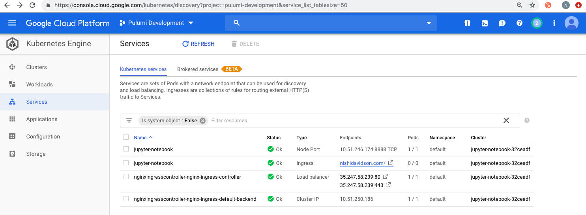
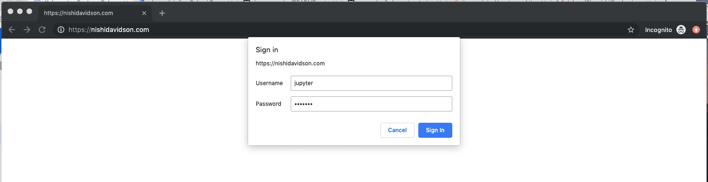
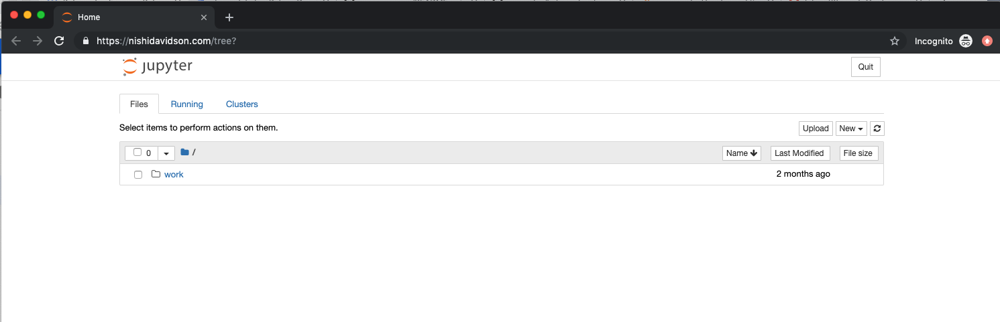

Create Secure Jupyter Notebooks on Kubernetes using Pulumi

In this post, we will work through an example that shows how to use Pulumi to create Jupyter Notebooks on Kubernetes. Having worked on Kubernetes since 2015, a couple of critical benefits jump out that may resonate with you as well:
- You write everything in code - TypeScript in our example here.
- You need not initialize Tiller or Helm to work with existing Helm charts like
nginx-ingress-controllerthat we use here. - The security patterns in Helm and Tiller are no longer concerns, rather you get to focus on the RBAC of the actual service which is Jupyter-notebook in this example.
- You accomplish more with less YAML and iteratively work towards your use cases.
Prerequisites
- Install Pulumi
- Install Node.js version 6 or later
- Install a package manager for Node.js, such as npm or Yarn
- Install Google Cloud SDK
- Install Helm and only initialize with
helm init —client-only
We will work this example on a GKE cluster so lets first configure GCP Auth:
$ gcloud auth login
$ gcloud config set project <YOUR_GCP_PROJECT_HERE>
$ gcloud auth application-default loginStep 1: Create a Pulumi Project and Stack with a Pulumi TypeScript Template
$ mkdir gke-jupyter-notebook && cd gke-jupyter-notebook
$ pulumi new typescript
$ npm install --save @pulumi/kubernetes @pulumi/gcpStep 2: Create a GKE Cluster
To create a GKE cluster, simply update the following code in index.ts file and run pulumi up.
import * as k8s from "@pulumi/kubernetes";
import * as pulumi from "@pulumi/pulumi";
import * as gcp from "@pulumi/gcp";
import { readFileSync, fstat } from "fs";
const name = "jupyter-notebook";
/*
* STEP 2: Create a GKE Cluster
*/
const engineVersion = gcp.container.getEngineVersions().then(v => v.latestMasterVersion);
const cluster = new gcp.container.Cluster(name, {
initialNodeCount: 2,
minMasterVersion: engineVersion,
nodeVersion: engineVersion,
nodeConfig: {
machineType: "n1-standard-1",
oauthScopes: [
"https://www.googleapis.com/auth/compute",
"https://www.googleapis.com/auth/devstorage.read_only",
"https://www.googleapis.com/auth/logging.write",
"https://www.googleapis.com/auth/monitoring"
],
},
});
// Export the Cluster name
export const clusterName = cluster.name;
// Manufacture a GKE-style kubeconfig.
export const kubeconfig = pulumi.
all([ cluster.name, cluster.endpoint, cluster.masterAuth ]).
apply(([ name, endpoint, masterAuth ]) => {
const context = `${gcp.config.project}_${gcp.config.zone}_${name}`;
return `apiVersion: v1
clusters:
- cluster:
certificate-authority-data: ${masterAuth.clusterCaCertificate}
server: https://${endpoint}
name: ${context}
contexts:
- context:
cluster: ${context}
user: ${context}
name: ${context}
current-context: ${context}
kind: Config
preferences: {}
users:
- name: ${context}
user:
auth-provider:
config:
cmd-args: config config-helper --format=json
cmd-path: gcloud
expiry-key: '{.credential.token_expiry}'
token-key: '{.credential.access_token}'
name: gcp
`;
});
// Create a Kubernetes provider instance that uses our cluster from above.
const clusterProvider = new k8s.Provider(name, { kubeconfig: kubeconfig });Step 3: Create a NGINX-Ingress-Controller to Generate Ingresses
You can use the default L7 load balancer in GCP but here we add an NGINX-Ingress-Controller to the cluster. With Pulumi, you write four lines of typescript to reuse the stable NGINX ingress controller helm chart and have the controller, default backends, RBAC, Service account, Config map all running within seconds.
Add the following lines of code in index.ts file and run pulumi up once again.
/*
* STEP 3: Create NGINX Ingress Controller in GKE
*/
const nginxingresscntlr = new k8s.helm.v2.Chart("nginxingresscontroller", {
repo: "stable",
chart: "nginx-ingress",
version: "0.24.1",
values: {},
}, { providers: { kubernetes: clusterProvider } }); Step 4: Create a Jupyter Notebook Deployment and Service with Type NodePort
Bringing up Jupyter notebook deployment and service requires adding the following lines of code in
index.ts file and running pulumi up to apply the changes.
/*
* STEP 4: Create Jupyter notebook deployment and service in the GKE cluster
*/
const appName = "jupyter-notebook";
const appLabels = { app: appName };
const jupyterNotebook = new k8s.apps.v1beta1.Deployment(appName, {
metadata: { name: appName, labels: appLabels },
spec: {
selector: { matchLabels: appLabels },
replicas: 1,
template: {
metadata: { labels: appLabels },
spec: {
containers: [
{
name: appName,
image: "jupyter/tensorflow-notebook",
ports: [{ containerPort: 8888 }],
command: ["start-notebook.sh"],
args: ["--NotebookApp.token=''"]
}]
}
}
}
}, { provider: clusterProvider });
const jupyterService = new k8s.core.v1.Service(appName, {
metadata: {
name: appName,
labels: appLabels
},
spec: {
type: "NodePort",
selector: appLabels,
ports: [{ protocol: "TCP", nodePort: 30040, port: 8888, targetPort: 8888 }],
}
}, { provider: clusterProvider });Step 5: Create a Secret that is used with your Jupyter Notebook Domain Name
We first create a local auth.txt file with the password using the following command:
htpasswd -c auth.txt jupyterWe then read this file synchronously, convert it to base64 and add it as a secret in the GKE cluster. We use this secret as the TLS password to access the Jupyter notebook ingress endpoint accessible from the domain name defined in the host section of the ingress declaration. The annotations in the ingress declarations are required to enable this behavior on the ingress object.
* STEP 5: Create a secret to enable "basic-auth" for your Jupyter
* notebook ingress and add it to the ingress declaration in the
* GKE cluster
*/
const authContents = (readFileSync("<path-to-auth.txt-file>")).toString()
function toBase64(s: string): string {
return Buffer.from(s).toString("base64");
}
const authContents_base64 = toBase64(authContents);
const jupyternotebooksecret = new k8s.core.v1.Secret("jupyter-notebook-tls", {
metadata: { name: "basic-auth", namespace: "default" },
type: "Opaque",
data: {
auth: authContents_base64,
}
})
export const jupyternotebookingress = new k8s.extensions.v1beta1.Ingress(appName, {
metadata: {
name: appName,
labels: appLabels,
annotations: {
"kubernetes.io/tls-acme": "true",
"kubernetes.io/ingress.class": "nginx",
"nginx.ingress.kubernetes.io/auth-type": "basic",
"nginx.ingress.kubernetes.io/auth-secret": "basic-auth",
"nginx.ingress.kubernetes.io/auth-realm": "Authentication Required - jupyter"
},
},
spec: {
rules: [{
host: "nishidavidson.com",
http: {
paths: [{
path: "/",
backend: { serviceName: "jupyter-notebook", servicePort: 8888 }
}]
}
}],
tls: [{
secretName: "jupyter-notebook-tls",
hosts: ["nishidavidson.com"]
}],
}
}, { provider: clusterProvider });
Once complete, you will see the GKE cluster components show up as follows:

Open a browser to access the jupyter-notebook Service using the domain name declared in the host
section of your ingress code above. In our example, I used the domain name nishidavidson.com.
When you open your DNS, you will be asked for the “username: jupyter” and “password” for the secret you created in auth.txt file as shown below:

As soon as the password is accepted, You should now be able to go to your website from anywhere in the world and access your password-protected Jupyter notebook running on GKE on secure SSL connection.

Success! We worked through a simple example of creating a GKE cluster, an NGINX ingress controller and stood up our password protected Jupyter notebook Ingress, Service, and Deployment with a simple secret for authentication.
You can get started today using more solutions on Kubernetes from our Pulumi examples repository.
Posted on